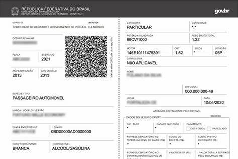

CRLV – Certificado de Registro e Licenciamento de Veículo

- Placa: Deve corresponder ao veículo cadastrado.
- Ano de fabricação/modelo: Confirmar com seus dados do veículo.
- Chassi/RENAVAM: Usado para identificação nacional; essencial no cadastro.
- Categoria (ex: particular): Indica uso permitido, como pessoa física.
- Data de validade/licenciamento: Verificar se está dentro do período legal.
Uso do CRLV: Este documento, exigido pelo DENATRAN, é obrigatório para circulação
de veículos em vias públicas. Serve como vínculo legal do veículo com seu proprietário
e as características que estão no cadastro oficial.
Usamos o CRLV para:
- Comprovar que o veículo está licenciado e pode circular.
- Verificar dados oficiais do veículo para cadastro, transferência ou venda.
- Identificar possíveis irregularidades (plágio, características divergentes).
Fontes: Manual de cadastro e normas do DENATRAN/Detran.